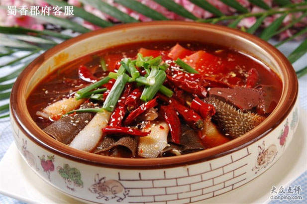
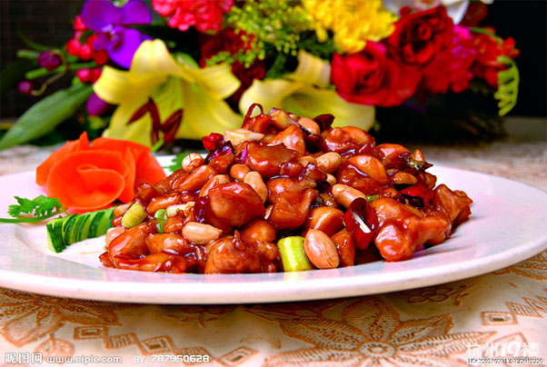

<ion-view view-title="食谱" id="recipes">
    <ion-nav-buttons side="primary">
        <div class="bar bar-header">
            <button class="button button-clear ion-ios-search pull-right"></button>
        </div>
    </ion-nav-buttons>
    <ion-content class="has-footer" style="background-color: #e7e7e7">
        <div class="button-bar shop-button-bar" style="background-color: #ffffff">
            <a class="button button-clear icon-right ion-arrow-down-b" ng-click="setSelectType('category')">全部功效</a>
            <a class="button button-clear icon-right ion-arrow-down-b" ng-click="setSelectType('sort')">全部工艺</a>
            <a class="button button-clear icon-right ion-arrow-up-b" ng-click="setSelectType('sort')" style="color: #f94647">图文模式</a>
        </div>
        <div class="recipes-list">
            <dl>
                <dd>
                    
                    
                </dd>
                <dd>
                    <div class="name">极品毛血旺</div>
                </dd>
                <dd>
                    <div class="type">
                        <span class="all-type">鱿鱼、培根、海参、香油等···</span>
                        <span class="Number">浏览&nbsp;26</span>
                    </div>
                </dd>
            </dl>
            <dl>
                <dd>
                    
                </dd>
                <dd>
                    <div class="name">极品毛血旺</div>
                </dd>
                <dd>
                    <div class="type">
                        <span class="all-type">鸡丁、花生、黄瓜、辣椒等···</span>
                        <span class="Number">浏览&nbsp;126</span>
                    </div>
                </dd>
            </dl>
        </div>

        <ul class="list">
            <li class="item">
                <h5 style="color: #f94546">图文模式</h5>
            </li>
            <li class="item">
                <h5>视频模式</h5>
            </li>
            <li class="item"  style="padding-bottom: 160px">
                <h5></h5>
            </li>
        </ul>
        <div class="gray-lucency-coverage">
        </div>
    </ion-content>
</ion-view>